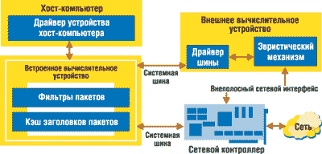

По материалам корпорации Intel.
Интернет-черви - глубоко проникающее в системы вредоносное ПО - представляют серьезную угрозу безопасности сетевых систем. Черви обычно распространяются, используя известные слабые места в защите ПО (например, переполнение буфера) в атакуемых системах. В отличие от вирусов и "троянских коней" распространение Интернет-червей обычно происходит автоматически, не требуя вмешательства человека, и нарастает экспоненциально. Например, червь Slammer выполняет в секунду 26 тыс. сканирований систем. В результате скорость заражения значительно превышает скорость распространения традиционных червей, и предельное время реакции сетевого администратора на атаку существенно сокращается.
Исследователи корпорации Intel (http://www.intel.com) показали эффективность нового решения для отражения атак программных червей - как быстро, так и медленно распространяющихся. Это двусторонний подход к отражению атак червей, функционирующий на основе платформы, независимо от ОС, которая может быть уязвима для атак. Система использует мощные, управляющие портами и протоколами многокадровые эвристические алгоритмы для немедленного и точного переключения между событиями и аномальными явлениями, имеющими низкий уровень ложных срабатываний, и обеспечивает сетевым администраторам необходимое время реакции при отражении внезапных атак. Она также выступает как укрепление передовой линии защиты от атак червей благодаря мониторингу агентов безопасности, имеющихся на хост-компьютере.
Сегодняшние методы и проблемы
Традиционные межсетевые экраны на базе хост-компьютеров и системы обнаружения вторжений, основанные на идентификации хоста, обычно эффективно борются с червями, но только не в случае внезапной вспышки вторжений в "День Зеро". Поскольку большинство межсетевых экранов и систем обнаружения вторжений - это программные решения, они и сами уязвимы для проникновения червей. Например, во время вспышки активности червя Witty Worm в 2004 г. использовалось слабое место в ПО межсетевых экранов для хост-компьютеров.
Существуют профилактические механизмы, которые в настоящее время способны защитить сетевые системы от вспышек атак червей, но эти методы (например, программирование надежного кода и инструментальные средства автоматической генерации надежного кода) имеют три основных недостатка. Во-первых, для их применения необходима перекомпиляция и/или модификация имеющегося ПО, включая каждый программный модуль, занимающий то же адресное пространство, что и компоненты безопасности (DLL, драйверы, код сторонних производителей). Далее, необходимо заменить весь комплекс ПО в сети, поскольку любой ненадежный модуль может сделать систему уязвимой для червей. Наконец, такие средства защиты существенно снижают производительность системы.
Сетевые системы обнаружения вторжений могут предоставить некоторую отсрочку в случае вспышки атак червей, но не обладают таким же уровнем видимости состояния программных агентов платформы, как компоненты самой платформы, что приводит в результате к неуправляемому количеству ложных срабатываний.
Существующие методы ограничения вторжений червей, такие, как схема обнаружения Threshold Random Walk (TRW) и система сдерживания Weaver на базе кэширования соединений, могут быть эффективны при борьбе с определенными типами червей, включая как быстро распространяющиеся, так и медленно распространяющиеся. Но эти методы вовсе не обязательно подходят для всех типов сетей.
Сегодня сетевые администраторы нуждаются в более эффективном, более автоматизированном механизме локального обнаружения червей и предотвращения их распространения. Однако, прежде чем создать систему ограничения вторжений червей, которая будет эффективна против всех их разновидностей, во всех типах сетей и обеспечит приемлемый уровень производительности, необходимо выяснить механизмы распространения червей.
Как распространяются черви
Самораспространяющиеся черви распространяются путем поиска уязвимых хостов в сети, а затем они используют уязвимые сервисы, работающие на таких хостах. Например, для обнаружения уязвимого хоста некоторые черви проводят случайное сканирование адресов, при котором червь случайно генерирует IP-адреса. Затем червь пытается запустить уязвимые сервисы на хостах с этими IP-адресами.
Назовем несколько типичных механизмов сканирования сетей, используемых червями:
- случайное сканирование адресов;
- последовательное сканирование адресов - червь сканирует IP-адреса последовательно;
- преимущественное сканирование локальных адресов - червь генерирует IP-адреса, которые с высокой вероятностью могут оказаться действующими адресами хост-компьютеров;
- метод декомпозиции - червь разделяет диапазон IP-адресов после проникновения на другой компьютер.
Все эти подходы имеют одну общую черту: червь ищет новые хост-компьютеры, чтобы распространиться на всю сеть.
Организация "ловушек" для червей
Разработанная корпорацией Intel система обнаружения вторжений для поиска инфицированных хост-компьютеров использует одно фундаментальное предположение, которое лежит в основе всех алгоритмов поиска червей. Оно заключается в том, что инфицированный хост в течение небольшого промежутка времени предпринимает существенно больше попыток сетевых подключений, чем незараженный хост. После того как обнаружена такая аномальная активность в сети, система обнаружения вторжений, управляющая портами и протоколами, снижает интенсивность трафика инфицированного хоста. Затем начинается проверка наличия и целостности агента безопасности на инфицированном хосте. Если агент безопасности не отвечает или поврежден, система обнаружения вторжений гарантирует полную блокировку инфицированного хоста.
Исследователи Intel доказали, что сетевые администраторы смогут существенно повысить уровень защиты от вторжений червей, используя защищенную от несанкционированного вмешательства двустороннюю систему защиты на базе платформы, независимую от ОС. Системы такого типа постоянно проверяют исходящие сетевые соединения в течение ограниченного времени прерывания трафика и с использованием эвристических правил определяют, был ли хост инфицирован, проверяя состояние выполняемого на этом хосте ПО. Инфицированный хост автоматически блокируется и отключается от остальной сети, чтобы предотвратить дальнейшее распространение червя.
Архитектура и функции двусторонней системы защиты
Основанная на платформах система защиты от вторжений червей быстрого реагирования периодически выполняет проверку присутствия и целостности ПО при помощи модуля System Integrity Services (SIS). Перед тестированием присутствия выполняется эвристический анализ с помощью механизма Heuristics Analysis Engine. Выполнение эвристического анализа занимает промежуток времени между проверками присутствия смежных агентов, чтобы предотвратить возможность проникновения в данную систему быстро распространяющихся червей. На рис. 1 показано, как эвристическая проверка трафика и система оценки присутствия и целостности работают совместно, чтобы прекратить распространение червя и защитить всю сеть в целом, а также защитить остальные платформы в сети от атак червей.
 |
| Рис. 1. Двусторонний подход к защите от атак червей с использованием проверки присутствия, анализа целостности и эвристического анализа трафика.
|
Архитектура модуля SIS
Функционирование модуля SIS строится на трех основных действиях: поиск местоположения агента, проверка его целостности и состояния его выполнения.
Местоположение агента - это область памяти, в которую загружена программа (как исполняемый код, так и ее статические и динамические данные). Информация о местоположении агента может использоваться сервисами проверки целостности для того, чтобы убедиться, что эта программа идентична оригинальной.
Сервис проверки целостности агента позволяет определить, был ли агент модифицирован по сравнению с его исходным состоянием.
Сервис проверки состояния выполнения позволяет определить, выполняется ли эта программа и управляется ли она операционной системой в течение длительного времени.
Архитектура модуля SIS включает несколько функциональных блоков, показанных на рис. 2.
| Рис. 2. Архитектура модуля System Integrity Services - анализ присутствия и целостности агентов.
|
Программный агент хост-компьютера - агент на том хосте, который необходимо защитить. Этот агент может быть драйвером устройства, агентом безопасности ядра (таким, как межсетевой экран), сервисом безопасности (например, виртуальной частной сетью, ядром ОС или любой другой программой).
Менеджер проверки целостности (Integrity Measurement Manager, IMM) - компонент, проводящий проверку целостности и состояния выполнения защищаемых хост-агентов, чтобы убедиться в том, что они не подверглись вмешательству и нормально функционируют. IMM использует прямой доступ к физической памяти проверяемого хоста, чтобы получить доступ к данным, необходимым для проверки. Если менеджер IMM обнаружит несоответствие агента оригиналу, он может запустить выполнение корректирующих действий.
Модуль сервисов проверки целостности (Integrity Services Module, ISM) - этот компонент работает в режиме System Management Mode (SMM), привилегированном режиме работы процессоров Intel x86. Он использует память, изолированную от ОС, благодаря чему код в режиме SMM выполняется независимо от ОС. Процессор переключается в режим SMM, когда возникает прерывание System Management Interrupt (SMI). В режиме SMM выполняемый код и соответствующие данные находятся в SMRAM - области памяти, защищенной набором микросхем и недоступной для ПО, до того выполнявшегося на процессоре, или в программируемых устройствах с прямым доступом к памяти. После того как система переходит в режим SMM, все прерывания запрещаются, и состояние системы, включая содержимое регистров, сохраняется в специальной области памяти внутри SMRAM. После выхода системы из режима SMM это состояние восстанавливается.
Доказательство целостности (Integrity Manifest) - набор информации, описывающей подлинность агента. Он включает сведения, необходимые IMM для проверки целостности агента. Integrity manifest подписывается производителем программы (при этом генерируется защищенный подписанный Signed Integrity Manifest) с несимметричным шифрованием, и эта подпись проверяется IMM при регистрации агента.
Модуль инициализации агента (Agent Initialization Module, AIM) - этот компонент входит в код защищенного агента хоста и обеспечивает сервисы, помогающие в проверке агента. Он выполняет операции с памятью, такие, как загрузка сегментов в физическую память, обеспечивает регистрацию в IMM и записывает информацию о размещении в памяти таким образом, чтобы IMM мог правильно использовать ее при проверке целостности.
Сервис виртуальной памяти (Virtual Memory Service, VMS) - этот компонент обеспечивает возможность трансляции виртуальных адресов хост-компьютера в физические адреса, как это делает ОС, изнутри изолированного раздела для выполнения. Для выполнения этой функции он интерпретирует функции управления защищенным режимом памяти 32-разрядной архитектуры Intel.
Все программные агенты на хост-компьютере, отслеживаемые и проверяемые SIS, регистрируются через IMM (который записывает информацию о них в список зарегистрированных агентов) во время начальной загрузки.
Проверка целостности агентов
Целостность программного агента проверяется, пока он находится в памяти. Это необходимо для того, чтобы не допустить его модификации во время выполнения. Первая проверка целостности происходит во время регистрации при запуске агента. В коде каждого проверяемого агента содержится зависящий от SIS модуль инициализации AIM, который выполняется при загрузке агента. Этот код инициализации отвечает за отправку сообщения о регистрации для IMM. После этого во время выполнения агент проверяется либо периодически, либо перед его использованием.
Вторая проверка целостности агента выполняется при его загрузке. Когда IMM получает от агента хоста запрос на регистрацию, IMM считывает подписанное доказательство целостности из памяти хоста. Если подпись на доказательстве целостности правильная, IMM считывает модули проверяемого агента так, как указано в доказательстве целостности. Используя таблицу переадресации и другую информацию из доказательства целостности, IMM проверяет разделы кода и данных. Затем он вычисляет для каждого раздела проверочное значение целостности (Check Value, ICV) и сравнивает его со значением ICV для соответствующего раздела из таблицы разделов, которая находится в доказательстве целостности. Если все значения соответствуют друг другу, IMM считает, что программный агент хост-компьютера не был модифицирован с того момента, как он был подписан производителем и загружен в память. Последующие проверки целостности выполняются IMM периодически, а также по запросу, если программный агент запросил сервисы проверки целостности через SMI.
Проверка присутствия агентов
Еще один важнейший сервис, выполняемый модулем Integrity Services Module (ISM), состоит в том, что проверяется присутствие правильно обновленного и проверенного агента хост-компьютера. Чтобы платформа могла выполнить такую проверку, агент должен периодически генерировать специальный индикатор и отправлять его IMM - это позволяет убедиться в том, что агент "жив" и выполняется. Отправление таких сообщений от хоста к IMM по своей сути небезопасно, так как ресурсы, доступные на хост-компьютере, уязвимы для организаторов атак, получивших на нем привилегированные уровни доступа.
Когда агент хоста хочет отправить IMM сообщение "о здоровье", он генерирует прерывание SMI. Затем ISM определяет источник прерывания SMI и, используя эту информацию, определяет, какая программа сгенерировала прерывание. После того как источник прерывания SMI определен, ISM проверяет, действительно ли программа, запросившая сервисы ISM, предварительно зарегистрирована в списке зарегистрированных агентов.
ISM определяет и проверяет источник прерывания SMI следующим образом: когда система переходит в режим SMM, значения в регистрах CR3, CS и EIP, соответствующие программной инструкции, которая вызвала прерывание, считываются из таблицы сохранения состояния программы, записанной в SMRAM. Затем логический адрес этой инструкции переводится в соответствующий виртуальный адрес. После того как определен виртуальный адрес источника прерывания (с помощью VMS), соответствующая программа определена. Для завершения процесса виртуальный адрес прерывания SMI сравнивается с диапазоном виртуальных адресов зарегистрированных программ. Эта локальная проверка, выполняемая ISM, завершается перед отправлением сообщения "о здоровье" IMM. Таким образом, подтверждается, что сообщение отправлено от конкретного агента, без риска фальсификации.
Механизм эвристического анализа
Система защиты SIS обеспечивает основанные на платформе постоянные проверки целостности и присутствия, защищенные от несанкционированного вмешательства. В промежутке между проверками эвристический компонент выполняет анализ трафика на хост-компьютере на базе эвристических алгоритмов. Архитектура этого эвристического компонента системы защиты (рис. 3) включает два основных вычислительных устройства, встроенное и внешнее, внедренных непосредственно в аппаратную платформу.
|  | Рис. 3. Архитектура защищенного от несанкционированного вмешательства механизма эвристического анализа.
|
Встроенное вычислительное устройство (Inline Processing Unit, IPU) находится непосредственно на пути входящего и исходящего сетевого трафика. Это устройство обрабатывает заголовки пакетов протоколов IP и TCP/UDP (transmission control protocol/user datagram protocol) и может выполнять специальные действия, такие, как сброс пакетов или постановка сетевого стека в очередь без передачи. Это устройство также запоминает копию заголовков с временными отметками, соответствующих входящему и исходящему трафику, и передает их внешнему вычислительному устройству для дальнейшей проверки.
Внешнее вычислительное устройство (Sideband Processing Unit, SPU) включает компоненты, не связанные напрямую с сетевым трафиком. SPU анализирует трафик, используя эвристические правила, и при получении свидетельств аномального трафика может установить соответствующие корректирующие фильтры пакетов в IPU, чтобы заблокировать хост-компьютер. Это устройство также использует внеполосное (out-of-band, OOB) соединение, чтобы отправить сигнал тревоги и уведомление о событии удаленному администратору.
Совместно устройства IPU и SPU образуют замкнутый цикл автоматизированной системы защиты от червей.
Эвристический алгоритм сканирования адресов
Эвристические правила на базе портов и протоколов используют два основных параметра конфигурации: размер окна и порог. Размер окна задает период, по окончании которого эвристический механизм сбрасывает свои счетчики. Порог задает нижний предел значения счетчика, по достижении которого определяется аномальное событие. Если эвристический механизм зафиксировал аномалию, SPU блокирует хост-компьютер и отсоединяет его от остальной сети, установив в IPU соответствующие фильтры пакетов.
Эвристика основана на разделении всего сетевого трафика в окне трафика на трафик TCP и трафик UDP. Для трафика TCP эвристический механизм подсчитывает количество уникальных IP-адресов назначения в запросах TCP-SYN, сгруппированных по портам назначения. Для трафика UDP он подсчитывает общее количество уникальных IP-адресов назначения, сгруппированных по портам назначения. Если значение одного из этих счетчиков (TCP или UDP для любого порта) превысит пороговое значение, система сообщает о появлении аномального трафика.
Из-за того, что для обнаружения червей с разной скоростью распространения необходимы окна разного размера, описываемая система использует множество размеров окон (эвристика со многими временными масштабами), что повышает ее эффективность в борьбе с самыми разными червями без снижения производительности. Соответствующим образом настроив параметры эвристического алгоритма и используя разброс DHCP (Dynamic Host Configuration Protocol), система может эффективно обнаруживать как очень быстрых, так и очень медленных червей.
Тестирование системы
Корпорация Intel тщательно тестировала двустороннюю систему для отражения атак программных червей, чтобы проверить действие эвристических алгоритмов и частоту ложных срабатываний (при использовании эвристического анализа ложное срабатывание означает, что система отражения атак определяет хост-компьютер как инфицированный, хотя на самом деле это не так). Проверка проводилась на примере пяти хорошо известных самораспространяющихся червей: SQL Slammer, Witty, MSBlaster, Code Red II и Slapper. Оценивалась также эффективность проверки важнейших программных агентов, таких, как драйверы устройств.
Соответствие заданным требованиям к производительности проверялось с помощью анализатора производительности Intel VTune на тестовой платформе при проверке целостности и жизнеспособности типичного межсетевого экрана, реализованного в виде драйвера, а также при проверке эвристического механизма. Время, необходимое для полной проверки целостности для процессора с частотой 1,5 ГГц, оказалось равным в среднем 0,13 мс; это означает, что размер окна для проверки целостности и присутствия (проверка "здоровья") составляет 0,13 мс. Принимая во внимание, что необходимо еще учитывать время переключения для обработчиков SMI, общее временное окно, необходимое для проверки целостности кода и статических данных сетевого драйвера с использованием среды SIS, составит 0,2 мс. Это промежуток времени, в течение которого червь имеет возможность проникнуть в систему между проверками целостности.
Эффективность поиска различных червей определялась так: сможет ли система остановить червя и какой процент компьютеров в сети окажется инфицированным к тому моменту, когда все инфицированные хост-компьютеры будут полностью блокированы. Тестирование проводилось для наихудших сценариев с использованием реального сетевого трафика, образуемого множеством клиентских хост-систем в корпоративной сети корпорации Intel. В реальной сети двусторонняя система для отражения атак программных червей, очевидно, будет работать быстрее, чем в наихудших сценариях, используемых при тестировании.
Результаты тестирования прототипа оказались лучше, чем ожидалось. Тестирование показало, что при разумной настройке параметров система, управляющая портами и протоколами, способна определить наличие всех пяти червей. Кроме того, система защиты на базе эвристических алгоритмов лишь незначительно загружает процессор. Например, SPU требуется всего около 100 нс, чтобы принять и прочесть каждый заголовок из кэша заголовков пакетов. Работая с подобными скоростями, система сможет обработать около 900 тыс. заголовков в секунду, что достаточно для обеспечения работы гигабитной сетевой карты, работающей с трафиком IPv4 на полной скорости.
Таким образом, модуль SIS для проверки целостности и присутствия использует относительно небольшое количество ресурсов и времени, очень сильно повышая при этом эффективность системы на базе эвристических алгоритмов за счет сокращения времени, в течение которого червь может модифицировать агента и начать распространение.
Эффективность двустороннего подхода
Благодаря тому, что модуль SIS выполняет мониторинг целостности и присутствия агентов хост-компьютера, у системы есть возможность определить модификации (включая время выполнения) и фальсификации, которые могут быть вызваны вредоносным ПО. Обнаружение модификаций во время выполнения в памяти помогает гораздо быстрее и надежнее обнаружить присутствие червя. Оно также позволяет убедиться, что аномальное поведение трафика - это не ложное срабатывание, сократить частоту ложных срабатываний и многократно повысить эффективность системы. Большинство недавних атак червей, таких, как Slammer, Code Red, Blaster и Witty Worm, показало, что все они выступают как резиденты памяти и инфицируют компоненты ядра ОС. Подход SIS позволяет проверять жизнеспособность и возможность фальсификации пораженных компонентов ядра.
Еще один важнейший показатель, определяющий эффективность системы, - время, проходящее от момента заражения до его обнаружения. Это чрезвычайно важно для таких быстрораспространяющихся червей "Дня Зеро", как Slammer и Blaster, а также для таких червей, как Witty, которые снижают полезную нагрузку системы.
Другой компонент двустороннего подхода - эвристический механизм, который работает "бок о бок" с модулем SIS для проверки целостности. Это решение позволяет улучшить защищенность системы от несанкционированного вмешательства и от ошибок. Исследования Intel показали, что эвристика с несколькими временными масштабами имеет много преимуществ по сравнению с анализом с одним временным масштабом. Например, эвристика с одним временным масштабом при размере окна в 1 мс и значении порога, равном 8, способна остановить только быстро распространяющиеся черви (со скоростью сканирования около 100 тыс. соединений в секунду). На другом конце этого диапазона при существенно небольшом размере префикса DHCP эвристика с одним временным масштабом с размером окна в 50 с и значением порога, равным 64, способна остановить всех червей, кроме самых медленных (со скоростью сканирования около 0,5 соединений в секунду). Используя окна размером 1 мс и 50 с совместно, система будет эффективно определять червей, скорости распространения которых лежат в самом широком диапазоне.
Если использовать только эвристические алгоритмы, очень медленные черви все же смогут проникнуть в значительную часть сети, и система не сможет определить их присутствие, но скорость распространения таких червей весьма мала, и у сетевых администраторов остается время, чтобы отреагировать на их проникновение другими методами. Кроме того, черви, использующие списки целей, могут действовать методом декомпозиции, чтобы добиться быстрого распространения по сети даже при малой скорости распространения. Однако, благодаря тому что в архитектуре Intel вне зависимости от скорости распространения червей применяется двусторонний подход, независимая от ОС система защиты предоставляет сетевым администраторам практически мгновенный и автоматический отклик на вторжение или по крайней мере дает им достаточно времени для реакции.
Дополнительная мера, которую можно использовать для повышения эффективности системы защиты от программных червей, - конфигурирование адресного пространства протокола Dynamic Host Configuration Protocol. В корпоративных сетях адресное пространство DHCP обычно разделено на подпространства. Такое размещение фактически создает преимущества для червей, использующих для проникновения алгоритм одноадресной генерации (например, линейное сканирование адресов или поочередное сканирование подсетей), так как им проще найти действительные IP-адреса. Поэтому сетевые администраторы должны предусмотреть случайное распределение выделенных IP-адресов равномерно по адресному пространству DHCP. Они также должны предусмотреть использование очень больших частных адресов DHCP, а затем применить глобальное устройство преобразования сетевых адресов NAT (network-address translation - обеспечивает однозначное соответствие между внешними и внутренними IP-адресами) для подключения хост-компьютера к Интернету. Такой профилактический подход к защите заставит червей совершать больше попыток неправильных подключений и замедлит их распространение.
Заключение
Если говорить о самораспространяющихся червях, первая линия защиты - определение факта их проникновения в хост-компьютер, антивирусное сканирование и другие программные агенты безопасности. Но эти агенты, будучи реализованы программно, сами уязвимы для атак (на разных уровнях). Механизм на базе платформы, напротив, благодаря защите от несанкционированного вмешательства и проверкам целостности может выполнять мониторинг успешного (или неуспешного) функционирования агентов безопасности хост-компьютера и выступать как "страж" на первой линии обороны.
Система корпорации Intel, основанная на платформе, также дает сетевым администраторам важнейшее преимущество, предоставляя дополнительную, последнюю линию обороны благодаря независимому от ОС мониторингу сетевого трафика, основанному на эвристических алгоритмах. При возникновении какого-либо события или аномальном поведении трафика система может мгновенно отреагировать и сообщить об этом, чтобы заблокировать инфицированные сетевые подключения и предотвратить заражение других систем. В сущности, благодаря основанной на платформе двусторонней системе Intel для отражения атак программных червей сетевые администраторы получат возможность немедленно отключить сетевое соединение или полностью заблокировать инфицированный хост-компьютер даже в случае вспышки нападений в "День Зеро".